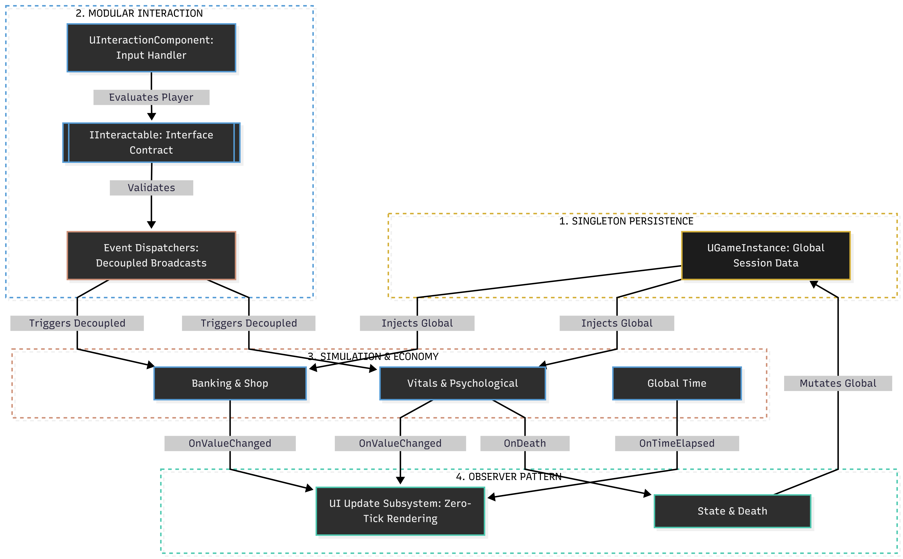

ROLE: Lead Developer & Game Designer
Team Name: RGB
Team: Varshin (UI Engineering, Env Art), Sreesaran (Deployment, Testing, Audio)
System Architecture

Execution flow demonstrating Singleton data persistence, interface-driven interaction components, and Observer-pattern UI updates.
Core Engineering Implementations
- Singleton-Pattern Game State Persistence: Architected a high-speed data persistence layer within the
UGameInstance, utilizing the Singleton pattern to manage global session data and cross-level state synchronization, essential for rapid iterative prototyping during the 48-hour development cycle.
- Modular Interaction Framework: Engineered a scalable
IInteractable interface that supports diverse input protocols—press, tap, and hold—allowing for seamless interaction across various environmental objects, computer terminals, and mini-game triggers.
- Simulation-Driven Economy & Lifecycle: Developed complex, decoupled simulation logic for banking, shop inventories, and character vitals. Leveraged a centralized data-driven approach to ensure simulation consistency across the game's branching narrative outcomes.
- Psychological Audio-Visual Pipeline: Integrated procedural audio systems that modulate dynamic parameters (e.g., heart-rate frequency) based on real-time game pressure variables, directly reinforcing the psychological narrative and emotional tension of the first-person perspective.
- Recursive UI & Mini-Game Integration: Built an advanced, nested UI architecture that enables full control of virtual interfaces (in-game computers), facilitating custom mini-game deployment within a secure, high-fidelity overlay system.
- Dynamic Narrative & Ending Resolver: Implemented a flag-based branching logic system to track player decisions, enabling multiple narrative endpoints that reinforce the game’s core philosophical commentary on "grind culture" versus interpersonal connection.